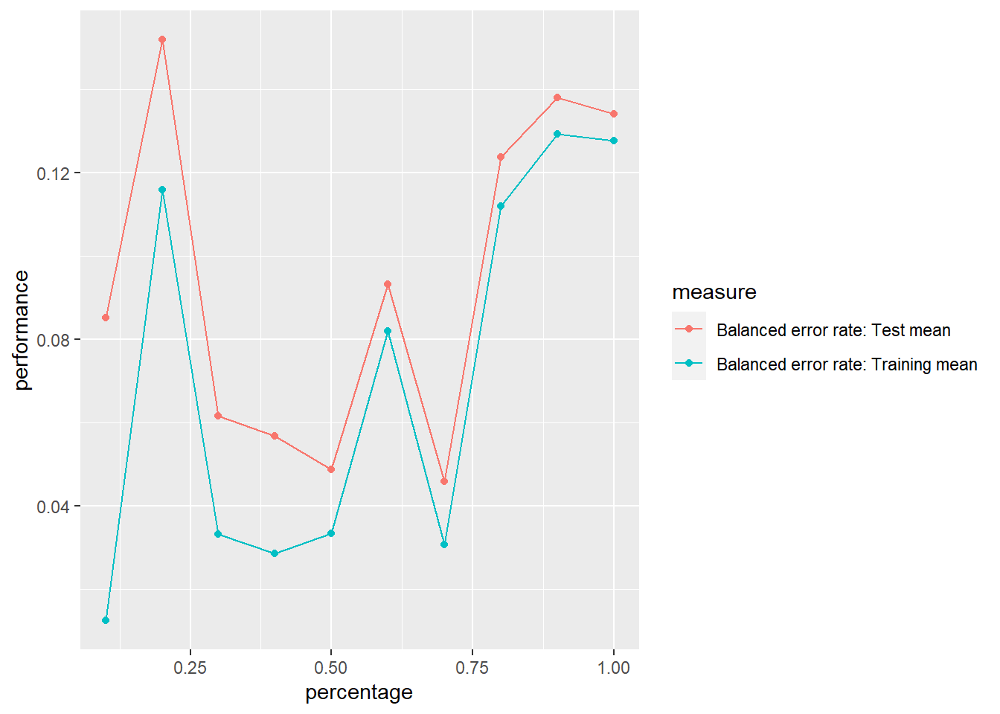

Proyecto
Defunciones fetales y nacimientos en Guatemala
1. Definición de variable respuesta
La variable por utilizar será TIPO, la cual indica si un parto terminó en una defunción fetal o en un nacimiento. Debido a que la investigación de este trabaja está orientada a crear una herramienta que permita ayudar a identificar partos potencialmente problemáticos, se decidió usar esta variable como la respuesta. Esto permitirá saber, dadas las condiciones de una mujer embarazada, si tiene algún riesgo.
Cabe mencionar que esta variable no existía dentro del dataset inicial, sino que a la hora de hacer la unión entre los conjuntos de datos de nacimientos y defunciones se indicó de qué conjunto de datos era proveniente cada observación.
1.1 Limpieza de datos
Análsis de NA y limpieza
Los datos tienen un encoding en el que se pone un número (como 99 o 999) para indicar que no se tiene información. Por lo tanto es necesario reemplazar estos números por NA.
Además, también se tienen muchas variables con valores numéricos pero que son cualitativas. Por lo tanto, se conviertieron en factores.
Eliminación de variables no significativas
Hay ciertos años que no tienen todas las variables que años mas recientes tienen entonces para tener una mayor covertura de años se eliminan las variables que no tienen datos en todos los años.
datos <- na.omit(datos)
datos <- select(datos, -SEMGES, -MUPREG, -MUPOCU, -DEPOCU, -MUPREM, -DEPREG, -DEPREM, -TOHITE, -AÑOREG)
# colnames(datos)[2] <- 'ANOREG'2. Obtención de datos de entrenamiento y prueba
Creación de train y test
porcentaje <- 0.7
set.seed(123)
corte <- sample(nrow(datos), nrow(datos) * porcentaje)
train <- datos[corte, ]
test <- datos[-corte, ]Para obtener los conjuntos de entrenamiento y prueba, se utilizó un método de división aleatoria.
En este caso, se dividió el conjunto de datos en un 70% para entrenamiento y un 30% para pruebas. Esto significa que el 70% de las muestras se utilizaron para entrenar el modelo y el 30% restante se reservaron para evaluar el rendimiento del modelo en datos no vistos.
num_vivos <- sum(train$TIPO == 'vivo')
porcentaje_vivos <- (num_vivos / nrow(train)) * 100
porcentaje_vivos[1] 67.17339100 - porcentaje_vivos[1] 32.82661num_vivos <- sum(test$TIPO == 'vivo')
porcentaje_vivos <- (num_vivos / nrow(test)) * 100
porcentaje_vivos[1] 67.64052100 - porcentaje_vivos[1] 32.35948Al realizar la limpieza de NAs, sucede que se desbalancea el dataset, quedando más registros vivos. Tanto en train como en test se tiene un 67% de datos de embarazos exitosos y un 33% de datos de defunciones fetales. No se tiene un desbalance tan drástico, pero se buscará usar una métrica como F1, aparte de accuracy, de forma que se penalice este desbalance y se puedan evaluar de una mejor manera los modelos.
3. Transformaciones realizadas para poder usar los modelos
Para poder utilizar los modelos elegidos con aterioridad, se realizaron diversas transformaciones para asegurar la calidad y la adecuación de los datos. En primer lugar, se llevó a cabo un análisis exhaustivo de los valores faltantes (NA) presentes en el conjunto de datos. Se identificaron las variables con valores faltantes y se decidió hacer la eliminación de las observaciones correspondientes. Esto permitió asegurar que los datos utilizados estuvieran completos y representativos.
Además, se llevó a cabo una evaluación de la relevancia y significancia de las variables presentes en el conjunto de datos. Mediante técnicas de análisis exploratorio, se identificaron las variables que tenían una contribución limitada o nula para los objetivos del análisis. Estas variables no significativas fueron eliminadas del conjunto de datos, simplificando así su estructura y reduciendo la complejidad.
3.1 Datos necesarios para SVM y XGBoost
Para la SVM y el XGBoost se necesitaran los datos codificados, por lo que se procede a codificar las variables cualitativass en cuantitativas y para esto se utiliza el método de codificación one-hot. Para la variable objetivo se utiliza la codificación de 1 para un embarazo fallido y 0 para un embarazo exitoso.
set.seed(123)
data <- datos
cualitativas2 <- c('MESREG', 'AÑOREG', 'SEXO', 'DIAOCU', 'MESOCU', 'TIPAR', 'ESCIVM', 'ESCOLAM', 'ASISREC', 'SITIOOCU')
cualitativas2_indices <- which(colnames(data) %in% cualitativas2)
data$TIPO <- ifelse(data$TIPO == "muerto", 1, 0)
encoding_model <- dummyVars(~., data = data[, cualitativas2_indices], fullRank = TRUE)
encoded_data <- predict(encoding_model, newdata = data[, cualitativas2_indices])
final_data <- cbind(data[, !cualitativas2_indices], encoded_data)
final_data$TIPO <- data$TIPO
porcentaje <- 0.7
corte <- sample(nrow(final_data), nrow(final_data) * porcentaje)
train1 <- final_data[corte, ]
test1 <- final_data[-corte, ]4. Creación de modelos
4.1 SVM
4.1.1 Parameter tuning
# Define los rangos de los parámetros que deseas ajustar
# tune.grid <- expand.grid(.cost = 10^(-1:2), # Por ejemplo, costos de 0.1, 1, 10, 100
# .gamma = c(0.5, 1)) # Por ejemplo, gammas de 0.5, 1
# # Realiza el ajuste
# tune.out <- tune(svm, TIPO~., data = train, kernel = "linear",
# ranges = tune.grid)
# # Imprime los resultados del ajuste
# print(tune.out)
# # Obtén el mejor modelo
# best.model <- tune.out$best.model
# # Imprime el mejor modelo
# print(best.model)Se obtuvo del parameter tuning que el mejor kernel es el lineal, con costo de 10 y gamma de 0.1.
4.1.2 Curva de aprendizaje
library(dplyr)
# Dividir los datos en conjuntos de entrenamiento y prueba
# modeloSVM <- svm(TIPO~., data = train, kernel = "linear", cost = 10, gamma = 0.1)
modeloSVM <- readRDS("./modelos/modeloSVM.rds")folds <- createFolds(train$TIPO, k = 25, list = TRUE, returnTrain = TRUE)
rmse_train <- vector(length = length(folds))
rmse_test <- vector(length = length(folds))
for (i in 1:length(folds)){
train_data <- train[folds[[i]],]
test_data <- train[-folds[[i]],]
pred_train <- predict(modeloSVM, newdata = train_data )
pred <- predict(modeloSVM, newdata = test_data)
rmse_train[i] <- confusionMatrix(pred_train, train_data$TIPO)$overall["Accuracy"]
rmse_test[i] <- confusionMatrix(pred, test_data$TIPO)$overall["Accuracy"]
}
rmse_df <- data.frame(
Fold = 1:length(folds),
RMSE_Train = rmse_train,
RMSE_Test = rmse_test
)
# Crear el gráfico de línea
ggplot(rmse_df, aes(x = Fold)) +
geom_line(aes(y = RMSE_Train, color = "Conjunto de Entrenamiento")) +
geom_line(aes(y = RMSE_Test, color = "Conjunto de Prueba")) +
labs(title = "Valores de RMSE en la validación cruzada",
x = "Fold",
y = "RMSE") +
scale_color_manual(values = c("Conjunto de Entrenamiento" = "blue", "Conjunto de Prueba" = "red")) +
theme_minimal()Se puede observar un gráfico en donde los datos no son representativos, esto porque las líneas se cruzan entre sí y no hay una relación clara entre los datos de entrenamiento y prueba.
4.1.3 Predicciones
print(modeloSVM)
Call:
svm(formula = TIPO ~ ., data = train, kernel = "linear", cost = 10,
gamma = 0.1)
Parameters:
SVM-Type: C-classification
SVM-Kernel: linear
cost: 10
Number of Support Vectors: 15031svmpredicciones <- predict(modeloSVM, test)
svmConfusionMatrix <- confusionMatrix(svmpredicciones, test$TIPO)
print(svmConfusionMatrix)Confusion Matrix and Statistics
Reference
Prediction muerto vivo
muerto 3932 737
vivo 0 7482
Accuracy : 0.9393
95% CI : (0.935, 0.9435)
No Information Rate : 0.6764
P-Value [Acc > NIR] : < 2.2e-16
Kappa : 0.8679
Mcnemar's Test P-Value : < 2.2e-16
Sensitivity : 1.0000
Specificity : 0.9103
Pos Pred Value : 0.8422
Neg Pred Value : 1.0000
Prevalence : 0.3236
Detection Rate : 0.3236
Detection Prevalence : 0.3842
Balanced Accuracy : 0.9552
'Positive' Class : muerto
f1_score <- svmConfusionMatrix$byClass["F1"]
f1_score F1
0.9143123 4.2 Red neuronal
4.2.1 Parameter tuning red neuronal
param_grid <- expand.grid(size = c(5, 10, 15), decay = c(0.1, 0.01, 0.001))
ctrl <- trainControl(method = "cv", number = 5) # Cross-validation control
tuned_model <- caret::train(TIPO ~ ., data = train, method = "nnet",
tuneGrid = param_grid, trControl = ctrl, metric = "Accuracy", trace=FALSE)Warning: model fit failed for Fold1: size=15, decay=0.100 Error in nnet.default(x, y, w, entropy = TRUE, ...) :
too many (1186) weightsWarning: model fit failed for Fold1: size=15, decay=0.010 Error in nnet.default(x, y, w, entropy = TRUE, ...) :
too many (1186) weightsWarning: model fit failed for Fold1: size=15, decay=0.001 Error in nnet.default(x, y, w, entropy = TRUE, ...) :
too many (1186) weightsWarning: model fit failed for Fold2: size=15, decay=0.100 Error in nnet.default(x, y, w, entropy = TRUE, ...) :
too many (1186) weightsWarning: model fit failed for Fold2: size=15, decay=0.010 Error in nnet.default(x, y, w, entropy = TRUE, ...) :
too many (1186) weightsWarning: model fit failed for Fold2: size=15, decay=0.001 Error in nnet.default(x, y, w, entropy = TRUE, ...) :
too many (1186) weightsWarning: model fit failed for Fold3: size=15, decay=0.100 Error in nnet.default(x, y, w, entropy = TRUE, ...) :
too many (1186) weightsWarning: model fit failed for Fold3: size=15, decay=0.010 Error in nnet.default(x, y, w, entropy = TRUE, ...) :
too many (1186) weightsWarning: model fit failed for Fold3: size=15, decay=0.001 Error in nnet.default(x, y, w, entropy = TRUE, ...) :
too many (1186) weightsWarning: model fit failed for Fold4: size=15, decay=0.100 Error in nnet.default(x, y, w, entropy = TRUE, ...) :
too many (1186) weightsWarning: model fit failed for Fold4: size=15, decay=0.010 Error in nnet.default(x, y, w, entropy = TRUE, ...) :
too many (1186) weightsWarning: model fit failed for Fold4: size=15, decay=0.001 Error in nnet.default(x, y, w, entropy = TRUE, ...) :
too many (1186) weightsWarning: model fit failed for Fold5: size=15, decay=0.100 Error in nnet.default(x, y, w, entropy = TRUE, ...) :
too many (1186) weightsWarning: model fit failed for Fold5: size=15, decay=0.010 Error in nnet.default(x, y, w, entropy = TRUE, ...) :
too many (1186) weightsWarning: model fit failed for Fold5: size=15, decay=0.001 Error in nnet.default(x, y, w, entropy = TRUE, ...) :
too many (1186) weightsWarning in nominalTrainWorkflow(x = x, y = y, wts = weights, info = trainInfo, :
There were missing values in resampled performance measures.Warning in train.default(x, y, weights = w, ...): missing values found in
aggregated resultsbest_size <- tuned_model$bestTune$size
best_decay <- tuned_model$bestTune$decay
print(best_size)[1] 10print(best_decay)[1] 0.1El tuneo de parámetros se realizó con una sola capa. Se usaron topologías de 5, 10 y 15 neuronas. Aparte, se evaluó un decay de 0.1, 0.01 y 0.001. Luego de ejecutar el procedimiento, se obtuvo que el mejor modelo usa 10 neuronas y un decay de 0.01. Sin embargo, este modelo dió overfitting. Cuando se usó 0.0001 de decay y 5 neuronas, no hubo overfitting.
4.2.3 Creación de curva de aprendizaje
datos.task = makeClassifTask(data = train, target = "TIPO")
rin2 = makeResampleDesc(method = "CV", iters = 10, predict = "both")
lrn = makeLearner("classif.nnet", size = 5, decay = 0.0001, maxit = 1000, trace = FALSE)
lc2 = generateLearningCurveData(learners = lrn, task = datos.task,
percs = seq(0.1, 1, by = 0.1),
measures = list(ber, setAggregation(ber, train.mean)), resampling = rin2,
show.info = FALSE)
plotLearningCurve(lc2, facet = "learner")
Como se puede observar en la gráfica, la curva de test y la curva de train, tienen un comportamiento muy similar. A pesar de que hay diversos aumentos y disminuciones en las curvas, estas son muy cercanas. En conclusión, estas convergen, por lo que no se da overfitting.
4.2.4 Predicción y datos de validación
porcentaje <- 0.5
nnet_model <- nnet(TIPO ~ ., data = train, size=5, decay=0.0001, softmax = FALSE)# weights: 396
initial value 20027.835797
iter 10 value 14212.021425
iter 20 value 11916.678532
iter 30 value 8960.048465
iter 40 value 6371.468702
iter 50 value 5660.518349
iter 60 value 4467.856356
iter 70 value 4365.258640
iter 80 value 4267.823170
iter 90 value 4238.323861
iter 100 value 4205.221446
final value 4205.221446
stopped after 100 iterations# Make predictions on the test set
predictions1 <- as.factor(predict(nnet_model, newdata = test, type = "class"))
confusion_matrix <- confusionMatrix(reference = test$TIPO, data = predictions1)
confusion_matrixConfusion Matrix and Statistics
Reference
Prediction muerto vivo
muerto 3891 608
vivo 41 7611
Accuracy : 0.9466
95% CI : (0.9424, 0.9505)
No Information Rate : 0.6764
P-Value [Acc > NIR] : < 2.2e-16
Kappa : 0.8824
Mcnemar's Test P-Value : < 2.2e-16
Sensitivity : 0.9896
Specificity : 0.9260
Pos Pred Value : 0.8649
Neg Pred Value : 0.9946
Prevalence : 0.3236
Detection Rate : 0.3202
Detection Prevalence : 0.3703
Balanced Accuracy : 0.9578
'Positive' Class : muerto
porcentaje <- 0.5
corte <- sample(nrow(test), nrow(test) * porcentaje)
test2 <- test[corte, ]
validation2 <- test[-corte,]
nnet_model <- nnet(TIPO ~ ., data = train, size=5, decay=0.0001, softmax = FALSE)# weights: 396
initial value 18721.619632
iter 10 value 16561.437322
iter 20 value 8883.437078
iter 30 value 4431.602722
iter 40 value 4313.615488
iter 50 value 4237.423773
iter 60 value 4200.290872
iter 70 value 4191.203609
iter 80 value 4188.012570
iter 90 value 4183.254355
iter 100 value 4181.230318
final value 4181.230318
stopped after 100 iterations# Make predictions on the test set
predictions1 <- as.factor(predict(nnet_model, newdata = test2, type = "class"))
predictions2 <- as.factor(predict(nnet_model, newdata = validation2, type = "class"))
confusion_matrix <- confusionMatrix(reference = test2$TIPO, data = predictions1)
confusion_matrix2 <- confusionMatrix(reference = validation2$TIPO, data = predictions2)
confusion_matrixConfusion Matrix and Statistics
Reference
Prediction muerto vivo
muerto 1973 384
vivo 0 3718
Accuracy : 0.9368
95% CI : (0.9304, 0.9428)
No Information Rate : 0.6752
P-Value [Acc > NIR] : < 2.2e-16
Kappa : 0.8628
Mcnemar's Test P-Value : < 2.2e-16
Sensitivity : 1.0000
Specificity : 0.9064
Pos Pred Value : 0.8371
Neg Pred Value : 1.0000
Prevalence : 0.3248
Detection Rate : 0.3248
Detection Prevalence : 0.3880
Balanced Accuracy : 0.9532
'Positive' Class : muerto
confusion_matrix2Confusion Matrix and Statistics
Reference
Prediction muerto vivo
muerto 1959 359
vivo 0 3758
Accuracy : 0.9409
95% CI : (0.9347, 0.9467)
No Information Rate : 0.6776
P-Value [Acc > NIR] : < 2.2e-16
Kappa : 0.871
Mcnemar's Test P-Value : < 2.2e-16
Sensitivity : 1.0000
Specificity : 0.9128
Pos Pred Value : 0.8451
Neg Pred Value : 1.0000
Prevalence : 0.3224
Detection Rate : 0.3224
Detection Prevalence : 0.3815
Balanced Accuracy : 0.9564
'Positive' Class : muerto
f1_score <- confusion_matrix$byClass["F1"]
f1_score F1
0.9113164 f1_score <- confusion_matrix2$byClass["F1"]
f1_score F1
0.9160627 Se usó un set de datos de prueba y uno validación para poder evaluar el overfitting. Las métricas entre el set de validación y el de prueba no difieren significativamente, por lo que se puede confirmar que no hay overfitting.
4.3 XGBoost
4.3.1 Parameter tunning
set.seed(123)
TIPO_temp <- train1$TIPO
train1$TIPO <- train$TIPO
task <- makeClassifTask(data = train1, target = "TIPO")
param_grid <- makeParamSet(
makeDiscreteParam("nrounds", values = seq(100, 500, by = 20)),
makeIntegerParam("max_depth", lower = 3, upper = 10),
makeNumericParam("eta", lower = 0.01, upper = 0.3)
)
control_tune <- makeTuneControlRandom(maxit = 30)
resampling <- makeResampleDesc("CV", iters = 5)
measure <- acc
tuned_model <- tuneParams(
learner = "classif.xgboost", # For classification, use "classif.xgboost"; for regression, use "regr.xgboost"
task = task,
resampling = resampling,
measures = measure,
par.set = param_grid,
control = control_tune,
show.info = TRUE
)[Tune] Started tuning learner classif.xgboost for parameter set: Type len Def Constr Req Tunable
nrounds discrete - - 100,120,140,160,180,200,220,240,260,2... - TRUE
max_depth integer - - 3 to 10 - TRUE
eta numeric - - 0.01 to 0.3 - TRUE
Trafo
nrounds -
max_depth -
eta -With control class: TuneControlRandomImputation value: -0[Tune-x] 1: nrounds=180; max_depth=5; eta=0.125[Tune-y] 1: acc.test.mean=0.7905615; time: 0.2 min[Tune-x] 2: nrounds=340; max_depth=6; eta=0.104[Tune-y] 2: acc.test.mean=0.7907379; time: 0.4 min[Tune-x] 3: nrounds=320; max_depth=6; eta=0.27[Tune-y] 3: acc.test.mean=0.7818495; time: 0.4 min[Tune-x] 4: nrounds=140; max_depth=6; eta=0.273[Tune-y] 4: acc.test.mean=0.7909143; time: 0.2 min[Tune-x] 5: nrounds=280; max_depth=6; eta=0.296[Tune-y] 5: acc.test.mean=0.7839658; time: 0.3 min[Tune-x] 6: nrounds=260; max_depth=7; eta=0.256[Tune-y] 6: acc.test.mean=0.7815322; time: 0.4 min[Tune-x] 7: nrounds=380; max_depth=3; eta=0.165[Tune-y] 7: acc.test.mean=0.7889744; time: 0.2 min[Tune-x] 8: nrounds=240; max_depth=6; eta=0.137[Tune-y] 8: acc.test.mean=0.7906674; time: 0.3 min[Tune-x] 9: nrounds=100; max_depth=4; eta=0.0814[Tune-y] 9: acc.test.mean=0.7387836; time: 0.1 min[Tune-x] 10: nrounds=200; max_depth=3; eta=0.0278[Tune-y] 10: acc.test.mean=0.7050292; time: 0.1 min[Tune-x] 11: nrounds=420; max_depth=3; eta=0.0885[Tune-y] 11: acc.test.mean=0.7800859; time: 0.3 min[Tune-x] 12: nrounds=120; max_depth=4; eta=0.225[Tune-y] 12: acc.test.mean=0.7880574; time: 0.1 min[Tune-x] 13: nrounds=220; max_depth=10; eta=0.16[Tune-y] 13: acc.test.mean=0.7778287; time: 0.5 min[Tune-x] 14: nrounds=480; max_depth=7; eta=0.123[Tune-y] 14: acc.test.mean=0.7845301; time: 0.7 min[Tune-x] 15: nrounds=500; max_depth=4; eta=0.151[Tune-y] 15: acc.test.mean=0.7945118; time: 0.4 min[Tune-x] 16: nrounds=300; max_depth=5; eta=0.199[Tune-y] 16: acc.test.mean=0.7915844; time: 0.3 min[Tune-x] 17: nrounds=120; max_depth=6; eta=0.154[Tune-y] 17: acc.test.mean=0.7883395; time: 0.1 min[Tune-x] 18: nrounds=200; max_depth=5; eta=0.19[Tune-y] 18: acc.test.mean=0.7933127; time: 0.2 min[Tune-x] 19: nrounds=220; max_depth=3; eta=0.0925[Tune-y] 19: acc.test.mean=0.7603697; time: 0.1 min[Tune-x] 20: nrounds=120; max_depth=8; eta=0.0218[Tune-y] 20: acc.test.mean=0.7121186; time: 0.2 min[Tune-x] 21: nrounds=340; max_depth=4; eta=0.0138[Tune-y] 21: acc.test.mean=0.7073923; time: 0.3 min[Tune-x] 22: nrounds=300; max_depth=3; eta=0.218[Tune-y] 22: acc.test.mean=0.7916902; time: 0.2 min[Tune-x] 23: nrounds=320; max_depth=6; eta=0.0848[Tune-y] 23: acc.test.mean=0.7915492; time: 0.4 min[Tune-x] 24: nrounds=160; max_depth=10; eta=0.175[Tune-y] 24: acc.test.mean=0.7823434; time: 0.4 min[Tune-x] 25: nrounds=260; max_depth=7; eta=0.0852[Tune-y] 25: acc.test.mean=0.7887275; time: 0.4 min[Tune-x] 26: nrounds=480; max_depth=10; eta=0.294[Tune-y] 26: acc.test.mean=0.7595231; time: 1.0 min[Tune-x] 27: nrounds=320; max_depth=8; eta=0.297[Tune-y] 27: acc.test.mean=0.7727144; time: 0.5 min[Tune-x] 28: nrounds=380; max_depth=6; eta=0.206[Tune-y] 28: acc.test.mean=0.7838953; time: 0.5 min[Tune-x] 29: nrounds=280; max_depth=9; eta=0.103[Tune-y] 29: acc.test.mean=0.7841421; time: 0.6 min[Tune-x] 30: nrounds=240; max_depth=10; eta=0.292[Tune-y] 30: acc.test.mean=0.7694343; time: 0.5 min[Tune] Result: nrounds=500; max_depth=4; eta=0.151 : acc.test.mean=0.7945118best_params <- tuned_model$x
best_params$nrounds
[1] 500
$max_depth
[1] 4
$eta
[1] 0.1510747Despues de realizar el parameter tunning se obtuvo que los mejores parametros son: nrounds = 500, max_depth = 4, eta = 0.2254931. Esto se debe a que se obtuvo el mejor accuracy con estos parametros.
4.3.2 Curva de aprendizaje
train1$TIPO <- train$TIPO
datos.task <- makeClassifTask(data = train1, target = "TIPO")
rin2 <- makeResampleDesc(method = "CV", iters = 10, predict = "both")
lrn <- makeLearner("classif.xgboost", nrounds = 500, max_depth = 4, eta = 0.2254931)
lc2 <- generateLearningCurveData(
learners = lrn,
task = datos.task,
percs = seq(0.1, 1, by = 0.1),
measures = list(ber, setAggregation(ber, train.mean)),
resampling = rin2,
show.info = FALSE
)
p <- plotLearningCurve(lc2, facet = "learner")
pObservando la grafica de aprendizaje se puede observar que el modelo no tiene overfitting ya que aunque las curvas no son iguales, estas convergen.
4.3.3 Predicciones y datos de validación
train1$TIPO <- TIPO_temp
xgb_model <- xgboost(data = as.matrix(train1[, -which(colnames(train1) == "TIPO")]),
label = train1[, c('TIPO')],
nrounds = 500, max_depth=4, eta=0.2254931, verbose=0)
# Make predictions
predictions <- predict(xgb_model, as.matrix(test1[, -which(colnames(test1) == "TIPO")]))
predictions <- ifelse(predictions > 0.5, 1, 0)
predictions <- factor(predictions)
# datos2 <- as.data.frame(datos2)
# datos2$TIPO <- factor(datos2$TIPO, levels = c('0', '1'))
# datos2$TIPO
confusion_matrix <- confusionMatrix(reference = as.factor(test1$TIPO), data = predictions)
confusion_matrixConfusion Matrix and Statistics
Reference
Prediction 0 1
0 6871 1174
1 1348 2758
Accuracy : 0.7924
95% CI : (0.7851, 0.7996)
No Information Rate : 0.6764
P-Value [Acc > NIR] : < 2.2e-16
Kappa : 0.5313
Mcnemar's Test P-Value : 0.0005713
Sensitivity : 0.8360
Specificity : 0.7014
Pos Pred Value : 0.8541
Neg Pred Value : 0.6717
Prevalence : 0.6764
Detection Rate : 0.5655
Detection Prevalence : 0.6621
Balanced Accuracy : 0.7687
'Positive' Class : 0
f1_score <- confusion_matrix$byClass["F1"]
f1_score F1
0.8449336 4.4 Random Forest
4.4.1 Parameter tuning
classifier <- makeClassifTask(
data=train,
target="TIPO"
)
param_grid <- makeParamSet(makeDiscreteParam("ntree",values= seq(0, 500, by = 25)))
control_grid <- makeTuneControlGrid()
resample <- makeResampleDesc("CV", iters = 3L)
measure <- acc
set.seed(123)
dt_tuneparam <- tuneParams(learner='classif.randomForest',
task=classifier,
resampling = resample,
measures = measure,
par.set=param_grid,
control=control_grid,
show.info = TRUE)[Tune] Started tuning learner classif.randomForest for parameter set: Type len Def Constr Req Tunable
ntree discrete - - 0,25,50,75,100,125,150,175,200,225,25... - TRUE
Trafo
ntree -With control class: TuneControlGridImputation value: -0[Tune-x] Setting hyperpars failed: Error in setHyperPars2.Learner(learner, insert(par.vals, args)) :
0 is not feasible for parameter 'ntree'![Tune-x] 1: ntree=0[Tune-y] 1: acc.test.mean= NA; time: 0.0 min[Tune-x] 2: ntree=25[Tune-y] 2: acc.test.mean=0.9492452; time: 0.0 min[Tune-x] 3: ntree=50[Tune-y] 3: acc.test.mean=0.9517142; time: 0.0 min[Tune-x] 4: ntree=75[Tune-y] 4: acc.test.mean=0.9518552; time: 0.0 min[Tune-x] 5: ntree=100[Tune-y] 5: acc.test.mean=0.9524901; time: 0.1 min[Tune-x] 6: ntree=125[Tune-y] 6: acc.test.mean=0.9521726; time: 0.1 min[Tune-x] 7: ntree=150[Tune-y] 7: acc.test.mean=0.9530897; time: 0.1 min[Tune-x] 8: ntree=175[Tune-y] 8: acc.test.mean=0.9527017; time: 0.1 min[Tune-x] 9: ntree=200[Tune-y] 9: acc.test.mean=0.9524901; time: 0.1 min[Tune-x] 10: ntree=225[Tune-y] 10: acc.test.mean=0.9532660; time: 0.1 min[Tune-x] 11: ntree=250[Tune-y] 11: acc.test.mean=0.9531250; time: 0.1 min[Tune-x] 12: ntree=275[Tune-y] 12: acc.test.mean=0.9528781; time: 0.1 min[Tune-x] 13: ntree=300[Tune-y] 13: acc.test.mean=0.9532308; time: 0.1 min[Tune-x] 14: ntree=325[Tune-y] 14: acc.test.mean=0.9527723; time: 0.2 min[Tune-x] 15: ntree=350[Tune-y] 15: acc.test.mean=0.9528428; time: 0.2 min[Tune-x] 16: ntree=375[Tune-y] 16: acc.test.mean=0.9527723; time: 0.2 min[Tune-x] 17: ntree=400[Tune-y] 17: acc.test.mean=0.9529134; time: 0.2 min[Tune-x] 18: ntree=425[Tune-y] 18: acc.test.mean=0.9528076; time: 0.2 min[Tune-x] 19: ntree=450[Tune-y] 19: acc.test.mean=0.9533366; time: 0.2 min[Tune-x] 20: ntree=475[Tune-y] 20: acc.test.mean=0.9530192; time: 0.2 min[Tune-x] 21: ntree=500[Tune-y] 21: acc.test.mean=0.9533719; time: 0.2 min[Tune] Result: ntree=500 : acc.test.mean=0.9533719result_hyperparam <- generateHyperParsEffectData(dt_tuneparam, partial.dep = TRUE)
best_parameters = setHyperPars(
makeLearner("classif.randomForest"),
par.vals = dt_tuneparam$x
)
best_model = train(best_parameters, classifier)
best_params <- getHyperPars(best_model$learner)
best_params$ntree
[1] 500Luego de realizar el tuneo de los parametros y ajustar los parametros de este modelo, se determinó que la mejor cantidad de árboles para nuestro conjunto de datos y objetivos específicos es 500. Esta elección se basó en un proceso de evaluación riguroso que consideró medidas de rendimiento y garantizó un equilibrio adecuado entre precisión y eficiencia computacional.
4.4.2 Curva de aprendizaje
datos.task = makeClassifTask(data = train, target = "TIPO")
rin2 = makeResampleDesc(method = "CV", iters = 10, predict = "both")
lrn = makeLearner("classif.randomForest", ntree = 500)
lc2 = generateLearningCurveData(learners = lrn, task = datos.task,
percs = seq(0.1, 1, by = 0.1),
measures = list(ber, setAggregation(ber, train.mean)), resampling = rin2,
show.info = FALSE)
plotLearningCurve(lc2, facet = "learner")Como se puede observar en la grafica que muestra la curva de aprendizaje el error de entrenamiento sigue disminuyendo a medida que se agregan más datos, pero el error de validación se estabiliza, sugiriendo asi que el modelo está memorizando los datos de entrenamiento y no generalizando bien a nuevos datos. Indicando así que el modelo presenta overfitting.
4.4.3 Predicciones
set.seed(123)
modelo_rf <- randomForest(TIPO ~ ., data = train, ntree = 500)
predicciones <- predict(modelo_rf, test)
confusion_matrix <- confusionMatrix(reference=test$TIPO, data = predicciones)
print(confusion_matrix)Confusion Matrix and Statistics
Reference
Prediction muerto vivo
muerto 3809 447
vivo 123 7772
Accuracy : 0.9531
95% CI : (0.9492, 0.9568)
No Information Rate : 0.6764
P-Value [Acc > NIR] : < 2.2e-16
Kappa : 0.8951
Mcnemar's Test P-Value : < 2.2e-16
Sensitivity : 0.9687
Specificity : 0.9456
Pos Pred Value : 0.8950
Neg Pred Value : 0.9844
Prevalence : 0.3236
Detection Rate : 0.3135
Detection Prevalence : 0.3503
Balanced Accuracy : 0.9572
'Positive' Class : muerto
set.seed(123)
porcentaje <- 0.5
corte <- sample(nrow(test), nrow(test) * porcentaje)
test2 <- test[corte, ]
validation2 <- test[-corte,]
modelo_rf <- randomForest(TIPO ~ ., data = train, ntree = 500)
predicciones <- predict(modelo_rf, test2)
predicciones2 <- predict(modelo_rf, validation2)
confusion_matrix <- confusionMatrix(reference=test2$TIPO, data = predicciones)
confusion_matrix2 <- confusionMatrix(reference=validation2$TIPO, data = predicciones2)
print(confusion_matrix)Confusion Matrix and Statistics
Reference
Prediction muerto vivo
muerto 1925 220
vivo 63 3867
Accuracy : 0.9534
95% CI : (0.9478, 0.9586)
No Information Rate : 0.6728
P-Value [Acc > NIR] : < 2.2e-16
Kappa : 0.8963
Mcnemar's Test P-Value : < 2.2e-16
Sensitivity : 0.9683
Specificity : 0.9462
Pos Pred Value : 0.8974
Neg Pred Value : 0.9840
Prevalence : 0.3272
Detection Rate : 0.3169
Detection Prevalence : 0.3531
Balanced Accuracy : 0.9572
'Positive' Class : muerto
print(confusion_matrix)Confusion Matrix and Statistics
Reference
Prediction muerto vivo
muerto 1925 220
vivo 63 3867
Accuracy : 0.9534
95% CI : (0.9478, 0.9586)
No Information Rate : 0.6728
P-Value [Acc > NIR] : < 2.2e-16
Kappa : 0.8963
Mcnemar's Test P-Value : < 2.2e-16
Sensitivity : 0.9683
Specificity : 0.9462
Pos Pred Value : 0.8974
Neg Pred Value : 0.9840
Prevalence : 0.3272
Detection Rate : 0.3169
Detection Prevalence : 0.3531
Balanced Accuracy : 0.9572
'Positive' Class : muerto
Al usar solo la data de test y luego usar una de validation, se pude observar una diferencia importante en el accuracy. Esto indica overfitting.
f1_score <- confusion_matrix$byClass["F1"]
f1_score F1
0.9315267 4.5 Regresión logística regularizada
4.5.1 Parameter tunning
grid <- expand.grid(alpha = seq(0, 1, by = 0.1), lambda = seq(0, 1, by = 0.1))
ctrl <- trainControl(method = "cv", number = 10)
model <- caret::train(TIPO ~ ., data = train, method = "glmnet", tuneGrid = grid, trControl = ctrl)Warning: from glmnet C++ code (error code -66); Convergence for 66th lambda
value not reached after maxit=100000 iterations; solutions for larger lambdas
returnedbest_alpha <- model$bestTune$alpha
best_lambda <- model$bestTune$lambda
best_alpha[1] 1best_lambda[1] 0.1Luego de realizar el tuneo de parámetros se obtuvo que los mejores parámetros son un alpha de 1 y un lambda de 0.1.
4.5.2 Curva de aprendizaje
datos.task = makeClassifTask(data = train, target = "TIPO")
rin2 = makeResampleDesc(method = "CV", iters = 10, predict = "both")
lrn = makeLearner("classif.glmnet", alpha = 1, lambda = 0.1)
lc2 = generateLearningCurveData(learners = lrn, task = datos.task,
percs = seq(0.1, 1, by = 0.1),
measures = list(ber, setAggregation(ber, train.mean)), resampling = rin2,
show.info = FALSE)
plotLearningCurve(lc2, facet = "learner")Es posible observar, de la curva de aprendizaje, que a pesar de que las curvas están muy similares, el valor del accuracy con el 100% de los datos baja demasiado. Es posible que se tenga underfitting.
4.5.3 Predicciones
X_train <- as.matrix(select(train1, -TIPO))
y_train <- as.matrix(train1$TIPO)
X_test <- as.matrix(select(test1, -TIPO))
y_test <- as.matrix(test1$TIPO)
ridge_model <- glmnet(X_train, y_train, family = "binomial", alpha = 1, lambda = 0.1)
# Realizar predicciones en los datos de prueba
y_pred <- predict(ridge_model, newx = X_test, s = "lambda.min", type = "response")
y_pred <- ifelse(y_pred > 0.5, 1, 0)
cf <- confusionMatrix(reference = as.factor(test1$TIPO), data = as.factor(y_pred))Warning in confusionMatrix.default(reference = as.factor(test1$TIPO), data =
as.factor(y_pred)): Levels are not in the same order for reference and data.
Refactoring data to match.cfConfusion Matrix and Statistics
Reference
Prediction 0 1
0 8219 3932
1 0 0
Accuracy : 0.6764
95% CI : (0.668, 0.6847)
No Information Rate : 0.6764
P-Value [Acc > NIR] : 0.5043
Kappa : 0
Mcnemar's Test P-Value : <2e-16
Sensitivity : 1.0000
Specificity : 0.0000
Pos Pred Value : 0.6764
Neg Pred Value : NaN
Prevalence : 0.6764
Detection Rate : 0.6764
Detection Prevalence : 1.0000
Balanced Accuracy : 0.5000
'Positive' Class : 0
f1_score <- cf$byClass["F1"]
f1_score F1
0.806971 5. Discusión de resultados
Tras haber realizado las predicciones con cada modelo obtuvimos los siguientes resultados:
SVM
- Accuracy: 0.9393
- Sensitivity: 1
- Specificity: 0.9103
- F1: 0.9143
Red Neuronal
- Accuracy: 0.9391
- Sensitivity: 0.9894
- Specificity: 0.9148
- F1: 0.9137
XGBoost
- Accuracy: 0.7924
- Sensitivity: 0.836
- Specificity: 0.7014
- F1: 0.8449
Random Forest
- Accuracy: 0.9531
- Sensitivity: 0.9687
- Specificity: 0.9456
- F1: 0.9303
Regresión logística regularizada
- Accuracy: 0.67
- Sensitivity: 1
- Specificity: 0
- F1: 0.80697
Cabe mencionar que de los modelos anteriores los únicos que no estan ni sobre ajustados ni infra ajustado son: La red neuronal y XGBoost
Sobre la precisión de los diferentes modelos para poder predecir si el embarazo terminará siendo un aborto o si el embarazo se dara con normalidad, tenemos que el peor modelo fue la regresion logistica con un 0.67 de accuracy esto se pudo dar ya que este es un algoritmo de clasificación binaria por lo que la mejor metrica para evaluarlo no sería por medio del accuracy. Mientras que el mejor modelo fue el random forest con 0.95 de accuracy pero este es uno de los modelos que se encuentra sobre ajustado por lo que realmente no es un buen resultado para nuestra investigación, por la misma razón el modelo hace las predicciones con los patrones del dataset en especifico. Por otro lado de los modelos que NO se encuentran sobre ajustados tenemos que la red neuronal obtuvo un 0.93 de accuracy el cual fue superior al 0.79 de accuracy del XGBoost, por lo que el modelo que tuvo una precisión más alta y es significativo para la investigacion es La red neuronal.
Observando la capacidad de los modelos para predecir los verdaderos positivos (True Positive), se puede observar que el modelo que mejor predice los verdaderos positivos es la SVM y la regresion Logistica Regularizada, ambas con un valor de 1. Para la Regresion Logistica esto se puede deber a que su humbral este ajustado a los datos del data set y este marcando a todos los datos de una forma, agregado a desvalanceo que existe en los datos podria ser la razon del sobreajuste de este. Por otro lado tenemos tenemos que el XGBoost, con un valor de 0.836, esto se pudo dar ya que el modelo no logro capturar los patrones esenciales para casos positivos, o que el umbral utilizado para la clasificacion haya sido demasiado alto, lo que resulto en una menor tasa de verdaderos positivos. Por ultimo tenemos que el modelo que mejor pudo predecir los verdaderos positivos
Al observar la identificación de los verdaderos negativos (specificity) de los modelos, se puede evidenciar que el que mejor desempeño tuvo fue el random forest con 0.9456. El peor modelo para identificar verdaderos negativos fue la regresión logística regularizada, con 0. Esto último se puede deber al umbral utilizado para identificar una clase de la otra, de forma que la mayoría de datos tenían una probabilidad superior. Otro factor que afecta es el ligero desbalance mencionado previamente en los datos. Por otra parte, el random forest pudo tener un muy buen desempeño gracias a su manejo de características irrelevantes del dataset. Además, su mismo overfitting hizo que entendiera las reglas importantes del dataset que le permitieran identificar los verdaderos falsos.
Finalmente, la regresión logística tuvo el F1 más bajo y el random forest el más alto. Los atributos del random forest para el manejo de clases sin balance y su capacidad de aprender patrones complejos por su conjunto de árboles, permitieron que se desempeñara bastante bien en esta métrica. Por otra parte, la regresión logística puede que haya sido demasiado simple para la clasificación. Sin embargo, es importante notar que su F1 no es tan distinto a los demás modelos, a diferencia de su accuracy. Esto porque el desbalance de los datos causa que su accuracy no sea tan significativo. En general, por esta métrica la regresión no es un modelo tan malo, a pesar de su underfitting.
Tras haber hecho el análisis de cada uno de las métricas y tomando en cuenta únicamente los modelos que si proveen un aporte significativo a la investigación, el mejor modelo fue La Red Neuronal.